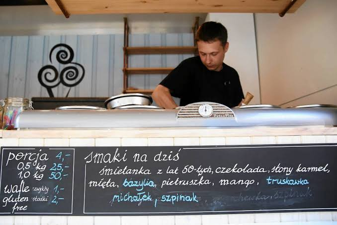

Tradycja, pasja cukiernicza i czysty skład w każdym pojedynczym gałkowym deserze.
Wytwarzanie lodów od kilkudziesięciu lat jest naszą rodzinną tradycją. Stało się to również naszą wspólną życiową pasją. Żyjąc w zgodzie z odwiecznym rytmem przyrody, tworzymy lody z płodów naszej ziemi:
świeżego mleka, śmietanki, jaj, owoców. Czerpiąc z bogactwa wyjątkowego rejonu Warmii i Mazur zamrażamy w lodach smak tego co daje nam sama natura.

Zero barwników E, brak sztucznych aromatów i brak utwardzanych tłuszczów roślinnych.
Świeże mleko i śmietana 30% prosto z okolicznych tradycyjnych gospodarstw rolnych.
Ponad 48 unikalnych kompozycji smakowych ułożonych przez naszych mistrzów cukiernictwa.